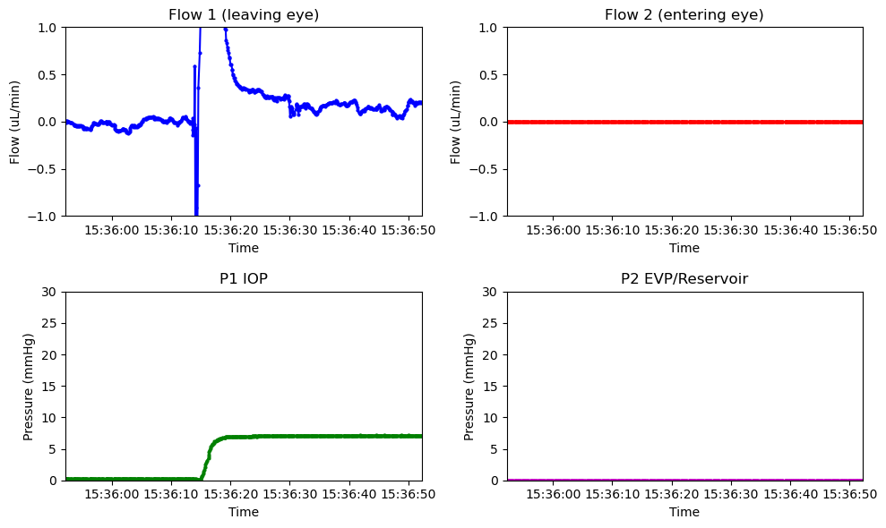
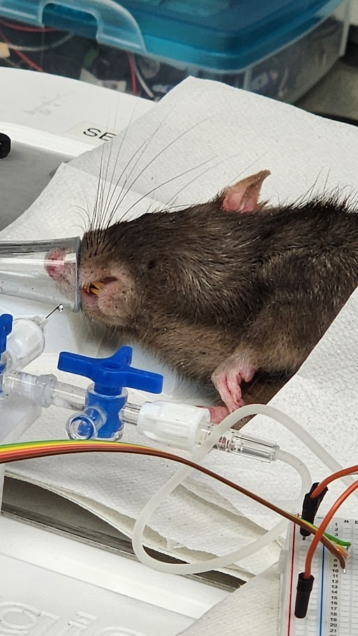

UNIVERSITY OF SOUTH FLORIDA · OPHTHALMOLOGY RESEARCH
Ophthalmic Instrumentation & Data Acquisition
A portable, laptop-based acquisition system for ocular pressure and fluid-flow experiments at the vivarium, integrating sensor electronics with live visualization and local data recording.
View Firmware and GUI on GitHub ↗

Research application
In the USF ophthalmology research laboratory, I worked on instrumentation supporting experimental measurements of intraocular pressure and ocular fluid flow. My contributions focused on the embedded acquisition and desktop software needed to read sensors, monitor signals as experiments progressed, and preserve the time-series data for later review.
The system was developed for experimental research, not as a clinical diagnostic or patient-monitoring instrument. Accurate sensor configuration, calibration, timing, and interpretation of channel units depend on the connected hardware.
Design requirement: Research at the vivarium
The measurement setup needed to support experiments directly at the university's vivarium rather than depend on a fixed workstation in the ophthalmology laboratory. Under the research project's animal-handling procedures, transporting the rats to the laboratory meant they had to be euthanized that day, creating a significant constraint on where the measurements could take place.
I developed the acquisition software to run locally on a portable Windows laptop connected to the instrumentation. The Python/Tkinter desktop application gave researchers live flow and pressure plots, serial-port controls, and timestamped data recording while working at the experimental site.
This was a practical engineering requirement, not just a software deployment preference: the electronics and laptop together needed to support on-site experimental workflows without requiring researchers to bring the animals to a separate laboratory for data collection.
Single-controller acquisition
The single-controller version reads one I²C flow sensor and one analog pressure sensor through an Arduino-compatible microcontroller. Flow and pressure are transmitted over one USB serial connection at 115200 baud to a Python/Tkinter logger.
For compatibility with the four-channel interface, the firmware sends two additional zero placeholders. Existing experimental data with one populated flow and one populated pressure trace is consistent with this architecture, although the exact flashed firmware and executable revision for each experiment have not been independently confirmed.
EXPERIMENTAL DATA PATH
Expanded dual-controller development
An expanded design explored two flow channels and two pressure channels. The intended architecture placed the two I²C flow sensors on separate ESP32 buses so identical sensor addresses would not conflict. An Arduino-compatible controller handled two analog pressure signals.
The Python application receives separate USB serial streams and combines the latest available values into a four-panel display and timestamped CSV. These readings are not hardware-synchronized across the controllers.
Development status: This architecture is preserved as an alternative implementation. The published ESP32 firmware contains known issues and the complete four-sensor setup has not been independently established as the system used for recorded experiments.
ALTERNATIVE ARCHITECTURE
Desktop application and data review
I developed the desktop application around practical laboratory needs: selecting COM ports, starting and stopping acquisition, viewing numeric readings alongside scrolling Matplotlib plots, adjusting the displayed time window, and saving timestamped datasets. The implementations use Tkinter, PySerial and Matplotlib.
Real-time visibility
A four-panel plotting layout makes changing flow and pressure signals observable during an experiment. The provided sample demonstrates how unused channels remain at their placeholder values in the single-controller setup.
Exportable measurements
Measurements can be saved as dated CSV files with flow and pressure columns. The dual-controller logger targets one output row every 100 ms using the latest readings, but that is not a guarantee of synchronized sensor sampling.
Experimental setup

Connecting electronics to experiments
The instrumentation work sits between physical experimental hardware and usable digital measurements. Fluid connections, electronic sensor interfaces, serial communication and desktop software all need to function together to support repeatable measurements.
Using the acquisition tools in a research setting also informed how the interface presented readings and how data were recorded for subsequent analysis.
Research from this environment contributed to materials presented in ophthalmology research forums, including ISER and BrightFocus-related work.
Engineering limitations and next steps
The preserved repository contains research-era implementations rather than a single fully validated release. Sensor scale factors and flow units require confirmation against the installed flow sensors, and the dual-controller version needs firmware corrections and hardware verification before use. The GUI code would also benefit from routing worker-thread updates through Tkinter's main event loop.
The repository includes separate README files and firmware/software for each implementation, allowing the hardware architectures and known limitations to be reviewed independently.
Explore the Ophthalmic Instrumentation Repository ↗